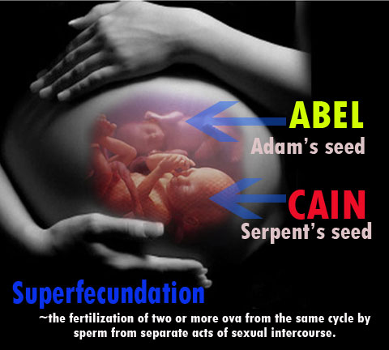
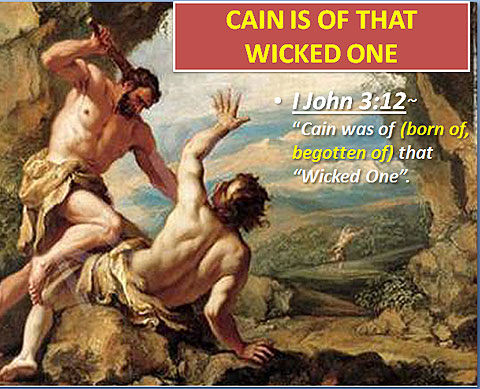
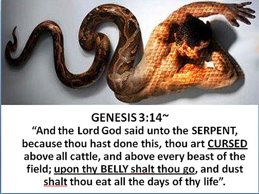
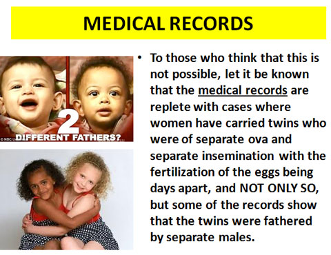

For years we have been taught and believed that Adam and Eve, our first parents in the garden of Eden, ate an apple from the tree in the midst of the garden, and through this act of disobedience the whole world plunged into sin.
QUESTIONS TO PONDER
First of all, we can never find the word “apple” in the Book of Genesis in relation to the fruit
that Eve ate.
Secondly, it would be a very shallow reason for God to punish His own children with death
just because of eating an apple. God should have included “not eating an apple” in the Ten Commandments.
Thirdly, if the real reason why man fell was eating an apple, Adam and Eve
should have covered their mouth with fig leaves because it was it that
caused the sin. But why cover their sex organs instead?
Fourthly, why is it that the punishment given to Eve for eating an apple
was to suffer more pain in more childbearing instead of punishing her with
eating more apples? Could it be that childbearing is connected with the original sin?
Fifth, if the serpent was already a crawling snake at the beginning,
why did God curse it by making it to crawl again? Could it be that the
serpent was an upright creature before the curse? The Bible said that
he even talked and reasoned with Eve.
Sixth, why is it that God required blood as penalty or payment for sin?
Is blood a part of the fall? Was there a mixing of blood like between man and animal?
Seventh, Why is there a need for man to be “born again” in order to enter
the Kingdom of heaven? Does it mean that our first birth was a mistake or error?
Although the Bible speaks that they were not to eat of the TREE of the
knowledge of good and evil, but never can we find in the entire Scriptures
that it was an apple that have caused our transgressions and fall (Genesis 2:17).
It will be difficult for many readers to believe this, but of a truth,
it was SEX or ADULTERY with the SERPENT that caused the fall of EVE
and ADAM, through which sin came into the world and brought each of us under its curse.
Here is where we receive the true revelation of the SERPENT’S SEED, and here is what really happened in the Garden of Eden. The Word says that Eve was "beguiled" by the serpent. She was actually seduced by the serpent. Satan took advantage of the serpent’s physical characteristics to use him to beguile Eve.
Remember that it was Lucifer’s ambition to build himself a greater kingdom than Michael did in heaven, before he was kicked out on earth. And still, he wanted to pursue his evil plan in this world after that. And the only way for Satan to accomplish what he wanted to do was to enter the serpent in Eden even as he entered by evil spirits into the swine at Gadara. He could not have a child directly by Eve as did God by Mary, so he entered into the serpent and then beguiled Eve. He seduced her and by her did Satan have a child vicariously - CAIN, the seed of the serpent, who bore the full spiritual characteristics of Satan and the animalistic (sensual, fleshly) characteristic of the serpent, and a murderer, too. It says in Genesis 3:1, “Now the serpent was more subtil than any beast of the field which the Lord God had made.” This beast was so close to a human being (and yet was pure animal) that he could reason and talk. He was close to a man. He was almost man. He was an upright creature and was somewhat in between a chimpanzee and a man, but closer to a man. He was so close to being human that his seed could, and did mingle with that of the woman and cause her to conceive. Before Adam ever had a carnal knowledge of Eve, the serpent had that knowledge ahead of him. And that one born of it was CAIN. “Cain was of (born of, begotten of) that “Wicked One”, according to I John 3:12.
Notice what God said to the SERPENT in the garden. Genesis 3:15, “And I will put enmity between thee and the woman, and between thy seed and her seed, It shall bruise thy head, and thou shalt bruise His heel.” If we give credit to the Word that the woman did have a seed, then the serpent must have surely had a SEED also. If the SEED of the woman was a MAN-CHILD apart from the man, then the SEED of the serpent will have to be in the same pattern, and that is another male must be born apart from human male instrumentality.
As the Seed of the woman was literally God reproducing Himself in human flesh, so the seed of the serpent is the literal way that Satan found he was able to open the door to himself into the human race. It was impossible for Satan (for he is only a created spirit-being) to reproduce himself in the manner which God reproduced Himself, so the Genesis account tells how he produced his seed and introduced or injected himself into the human race.
When this illicit act happened between Eve and the serpent, God cursed the serpent. He changed every bone in the serpent’s body so that he had to crawl like a snake. “And the Lord God said unto the SERPENT, because thou hast done this, thou art CURSED above all cattle, and above every beast of the field; upon thy BELLY shalt thou go, and dust shalt thou eat all the days of thy life”.
Science can try all it wants to, and it won’t find the MISSING LINK between man and animal. God saw to that. Man is smart and he can see an association of man with animal and he tries to prove it out of evolution. There isn’t any evolution. But man and animal did mingle. That’s one of the mysteries of God that has remained hidden, but here it is revealed. It happened right back there in the midst of Eden when Eve turned away from Life to accept Death. Immediately after EATING the FRUIT (remember that we are the FRUITS of our mother and father), they quickly knew that they were NAKED. And they hid themselves from God and made aprons of fig leaves to cover their NAKEDNESS (Gen. 3:7-8). SURELY this must speak to our understanding that it was SEX, and NOT EATING APPLES (or else Adam and Eve could have made aprons for their mouth rather covering their private parts). Also take note that after this affair , God did not curse Eve by punishing her with more apples to eat, but said, “Unto the woman He said, I will multiply thy sorrow and thy CONCEPTION; in sorrow thou shalt BRING FORTH CHILDREN, and thy desire shall be to thy husband..” (Gen. 3:16). This tremendous act has brought forth the advent for man’s sexual reproduction, which was never God’s original plan, because God just speaks His children into existence and they come forth out of the dust, just like the way He created the first man, Adam. The fruit or result of Eve being sexually known by the serpent and Adam was that she conceived both CAIN and ABEL. The truth of the matter is that Eve had in her womb TWO sons (TWINS) from SEPARATE IMPREGNATIONS. She was carrying TWINS, with Cain’s conception sometime previous to that of Abel’s. To those who think that this is not possible, let it be known that the medical records are replete with cases where women have carried twins who were of separate ova and separate insemination with the fertilization of the eggs being days apart, and NOT ONLY SO, but some of the records show that the twins were fathered by separate males. Recently worldwide coverage was given to a Norwegian mother who was suing her husband for support for herself and her twins, one of which was white and the other black. She admitted that she had a Negro lover. The two conceptions were about three weeks apart. In Beaumont, Texas, in 1963, the records again set forth a multiple birth wherein pregnancies were many days apart, in fact so much so that the woman almost died along with one child in childbirth.
From that time on when Satan has successfully injected his SEED into mankind, there has always been TWINS warring in the Scriptures. We can see Cain & Abel, Esau and Jacob, Ishmael and Isaac, Moses and Pharaoh, Judas and Jesus, to be the SEED of the WOMAN and the SEED of the SERPENT, having the ENMITY one with the other.
It is amazing that Jude 14 records that ENOCH was the SEVENTH from Adam, which confirms that CAIN was really NOT the son of Adam, but the SON of the SERPENT. The genealogies of ADAM was on this wise : (1) Adam, (2) Seth, (3) Enos, (4) Cainan, (5) Mahaleel, (6) Jared, (7) Enoch. Notice that Cain was never mentioned in the list of the Bible as a son of Adam; and Abel, of course, was no longer mentioned because he was murdered by Cain, and did not have any descendant.
In the New Testament, we can find traces of the serpent seed through the persons of the religious Pharisees and Saducees as John the Baptist addressed them as such. In the New Testament, we can find traces of the serpent seed through the persons of the religious Pharisees and Saducees as John the Baptist addressed them as such. Jesus called them the Pharisees in Matthew 12:34 – ” O generation of vipers, how can ye, being evil, speak good things? for out of the abundance of the heart the mouth speaketh.” Also in Matthew 23:33 - “[Ye] serpents, [ye] generation of vipers, how can ye escape the damnation of hell?”